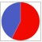

<!DOCTYPE html>
<html>

	<head>
		<meta http-equiv="Content-Type" content="text/html; charset=utf-8" />
		<meta name="viewport" content="initial-scale=1.0, user-scalable=no" />
		<script src="jquery-2.1.3.min.js" type="text/javascript"></script>
		<style type="text/css">
			body,
			html,
			#l-map {
				width: 100%;
				height: 100%;
				overflow: hidden;
				margin: 0;
			}
		</style>
		<script type="text/javascript" src="http://api.map.baidu.com/api?type=quick&ak=cElCR5PGh4nlvqxeMb26Mmkr&v=1.0"></script>
		<script type="text/javascript" src="RichMarker.js"></script>
		<title>显示地图</title>
	</head>

	<body>
		<div id="l-map"></div>
		
	</body>

</html>
<script type="text/javascript">
	$(function() {
		window.onload = getLocation;
		window.locationX;
		window.locationY;
		var map;
		function getLocation() {
				if (navigator.geolocation) {
					navigator.geolocation.getCurrentPosition(function(position) {
						$.ajax({
							type: "post",
							url: "http://api.map.baidu.com/geoconv/v1/?coords=" + position.coords.longitude + "," + position.coords.latitude + "&from=1&to=5&ak=cElCR5PGh4nlvqxeMb26Mmkr",
							async: true,
							dataType: "json",
							success: function(data) {
								showPosition(data.result[0].x, data.result[0].y);
							}
						});
					}, showError);
				} else {
					alert("本设备不支持定位哦");
				}
			}
			// 定位失败时，执行的函数 

		function showError(error) {
			switch (error.code) {
				case error.PERMISSION_DENIED:
					alert("请在“设置”中开启“位置信息”后再使用哦");
					break;
				case error.POSITION_UNAVAILABLE:
					alert("Location information is unavailable.");
					break;
				case error.TIMEOUT:
					alert("The request to get user location timed out.");
					break;
				case error.UNKNOWN_ERROR:
					alert("An unknown error occurred.");
					break;
			}
		}

		function showPosition(x, y) {
			
			map = new BMap.Map("l-map");
			map.centerAndZoom(new BMap.Point(x, y), 20);
			map.addControl(new BMap.ZoomControl()); //添加地图缩放控件
			map.addControl(new BMap.ScaleControl({"offset":new BMap.Size(0, 20)}) );//添加比例尺控件
			//定位
			var marker_me = new BMap.Marker(new BMap.Point(x, y)); //创建标注
			map.addOverlay(marker_me); // 将标注添加到地图中
			console.log("x:" + x + " y:" + y);
			window.locationX = x;
			window.locationY = y;
			
			//请求服务器获取周边商家
			getMerchants();
			//标注商家
//			var myIcon = new BMap.Icon("img/ratio.png", new BMap.Size(53, 53));
//			var marker1 = new BMap.Marker(new BMap.Point(113.94049705331, 22.548550620923), {
//				icon: myIcon
//			}); 
			//创建标注
//			map.addOverlay(marker1); // 将标注添加到地图中
//			marker1.addEventListener('click', startGroupChat);
//			var htm1 = "<div><p style='display: none;'>1</p></div>"
//			myRichMarker1 = new BMapLib.RichMarker(htm1, new BMap.Point(113.94249705331, 22.548550620923), {
//					"anchor": new BMap.Size(-47, -116),
//					"enableDragging": true
//				});
//			map.addOverlay(myRichMarker1);
//			myRichMarker1.addEventListener('onclick', function(e) {
//			console.log(e.target.getPosition().lng+" "+e.target.getPosition().lat);
//			alert(e.target.getContent());
//				
//				var content = $(e.target.getContent());
//				var name = $(content).children('p').html();
//				alert(name);
//			});
		}

		function startGroupChat() {
			window.location = 'groupChat.html';
		}
//		function getMerchants(){
//			console.log('getMerchants');
//			if(window.locationX == null || window.locationX == ""){
//				return;
//			}
//			$.ajax({
//				type:"post",
//				url:"",
//				async:true,
//				data:{x:window.locationX,y:window.locationY,range:"100"},
//				success:function(data){
//					var counts = data.merchants.length;
//					if(counts > 0){
//						for(var i= 0;i < counts;i++)
//						{
//							var htm1 = "<div><p style='display: none;'>"+data.merchants[i].name+"</p></div>"
//							myRichMarker1 = new BMapLib.RichMarker(htm1, new BMap.Point(data.merchants[i].positionX, data.merchants[i].positionY));
//							map.addOverlay(myRichMarker1);
//							//点击事件
//							myRichMarker1.addEventListener('onclick', function(e) {
//							var content = $(e.target.getContent());
//							var name = $(content).children('p').html();
//							alert(name);
//							window.location = 'groupChat.html';						
//							});
//						}
//					}else{
//						alert('附近没有可以群聊的哦');
//					}
//						
//				},
//				error:function(err){
//					alert(err);
//				}
//			});
//		}
		function getMerchants(){
			var data = {merchants:[{id:1,name:"KFC",positionX:113.94249705331,positionY:22.548550620923,tatio:60},
						{id:2,name:"MacDonald",positionX:113.94049705331,positionY:22.548550620923,tatio:60}]}
			var counts = data.merchants.length;
			if(counts > 0){
				for(var i= 0;i < counts;i++)
				{
					var htm1 = "<div><p id='merchantID' style='display: none;'>"+data.merchants[i].id+"</p>"+"<p id='merchantName' style='display: none;'>"+data.merchants[i].name+"</p></div>"
					myRichMarker1 = new BMapLib.RichMarker(htm1, new BMap.Point(data.merchants[i].positionX, data.merchants[i].positionY));
					map.addOverlay(myRichMarker1);
					//点击事件
					myRichMarker1.addEventListener('onclick', function(e) {
					var content = $(e.target.getContent());
					var name = $(content).children('p').html();
					alert(name);
					var id = $(content).children('#')
					startGroupChat();					
					});
				}
			}else{
				alert('附近没有可以群聊的哦');
			}
		}
		}
	})
</script>